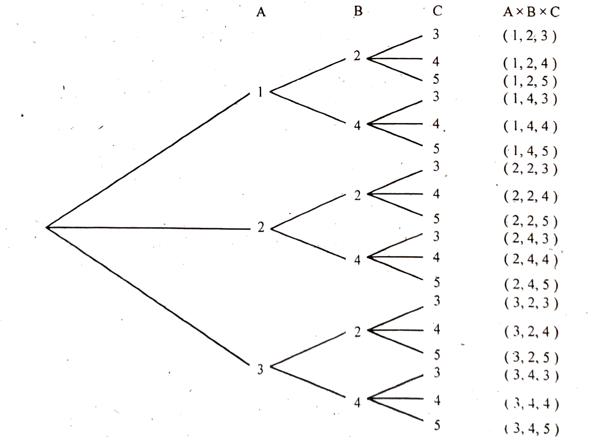

{kind=link}
Chapter 8 Set Theory · printed page 5 (scan 5) — Examples 8.3, 8.4 and 8.5 with the A×B×C tree diagram (Figure-8)
Example 8.3.
Let $A = \{2, 3\}$, $B = \{3, 4\}$ and $C = \{4\}$ be subsets of the universal set $S = \{2, 3, 4\}$. Determine the sets.
(i) $A \times A$ (ii) $A \times B$ (iii) $B \times A$ (iv) $(A \times B) \cap (B \times C)$ (v) $(A \times B) \cup (B \times C)$
Solution: (i)$A \times A = \{(2, 2), (2, 3), (3, 2), (3, 3)\}$
(ii)$A \times B = \{(2, 3), (2, 4), (3, 3), (3, 4)\}$
(iii)$B \times A = \{(3, 2), (3, 3), (4, 2), (4, 3)\} \quad B \times C = \{(3, 4), (4, 4)\}$
(iv)$(A \times B) \cap (B \times C) = \{3, 4\}$
(v)$(A \times B) \cup (B \times C) = \{(2, 3), (2, 4), (3, 3), (3, 4), (4, 4)\}$
Example 8.4.
Given $S = \{\text{k}, \text{l}, \text{m}, \text{n}, \text{o}, \text{p}\}$, $A = \{\text{k}, \text{l}\}$, $B = \{\text{m}, \text{n}, \text{o}, \text{p}\}$, $C = \{\text{o}, \text{p}\}$. Find
(i) $\bar{\text{C}}$ (ii) $\text{A} \cup \text{C}$ (iii) $\text{A} \cup \text{B}$ (iv) $\text{A} \cap \text{B}$
(v) $\text{A} \cup \text{S}$ (vi) $\text{S} \cap \text{B}$ (vii) $\overline{(\text{A} \cup \text{B})}$ (viii) $\overline{\bar{\text{A}} \cap \bar{\text{B}}}$
Solution: (i)$\bar{\text{C}} = \{\text{k}, \text{l}, \text{m}, \text{n}\}$ (ii) $\text{A} \cup \text{C} = \{\text{k}, \text{l}, \text{o}, \text{p}\}$ (iii) $\text{A} \cup \text{B} = \{\text{k}, \text{l}, \text{m}, \text{n}, \text{o}, \text{p}\}$
(iv)$\text{A} \cap \text{B} = \phi$ (v) $\text{A} \cup \text{S} = \{\text{k}, \text{l}, \text{m}, \text{n}, \text{o}, \text{p}\} = \text{S}$ (vi) $\text{S} \cap \text{B} = \{\text{m}, \text{n}, \text{o}, \text{p}\} = \text{B}$
(vii)$\overline{(\text{A} \cup \text{B})} = \phi$ $\bar{\text{A}} = \{\text{m}, \text{n}, \text{o}, \text{p}\}$ $\bar{\text{B}} = \{\text{k}, \text{l}\}$ $\bar{\text{A}} \cap \bar{\text{B}} = \phi$
(viii)$\overline{\bar{\text{A}} \cap \bar{\text{B}}} = \{\text{k}, \text{l}, \text{m}, \text{n}, \text{o}, \text{p}\} = \text{S}$
Example 8.5.
Let $A = \{1, 2, 3\}$, $B = \{2, 4\}$ and $C = \{3, 4, 5\}$. Find $\text{A} \times \text{B} \times \text{C}$.
Solution: A convenient method of finding $\text{A} \times \text{B} \times \text{C}$ is through the so called “tree diagram” shown below:
